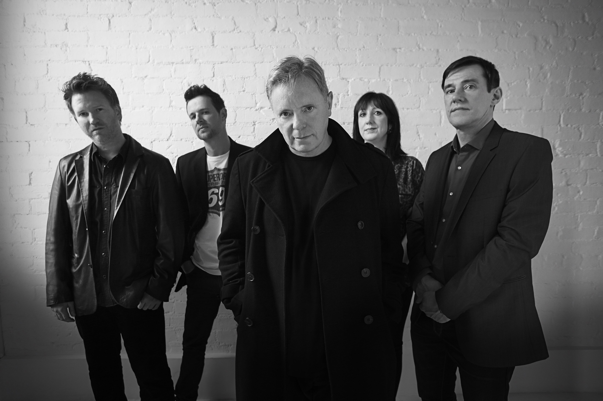

New Order are an English rock band formed in 1980 by vocalist and guitarist Bernard Sumner, bassist Peter Hook and drummer Stephen Morris. The members regrouped after the disbandment of their previous band Joy Division due to the death by suicide of lead singer Ian Curtis. They were joined by Gillian Gilbert on keyboards later that year. New Order's integration of post-punk with electronic and dance music made them one of the most acclaimed and influential bands of the 1980s. They were the flagship band for Manchester-based independent record label Factory Records and its nightclub The Haçienda, and they worked in long-term collaboration with graphic designer Peter Saville.
While the band's early years were overshadowed by the legacy of Joy Division, their experience of the early 1980s New York club scene saw them increasingly incorporate dance rhythms and electronic instrumentation into their work. Their 1983 hit "Blue Monday" became the best-selling 12-inch single of all time and a popular club track. In the 1980s, they released successful albums such as Power, Corruption & Lies (1983), Technique (1989), and the singles compilation Substance (1987). They disbanded in 1993 to work on individual projects before reuniting in 1998. In the years since then New Order has gone through various hiatuses and personnel changes, most prominently the departure of Hook in 2007 due to personal disputes with the other members. In 2015, they released their tenth studio album, Music Complete. In 2023, both Joy Division and New Order were nominated as one act for the Rock and Roll Hall of Fame.